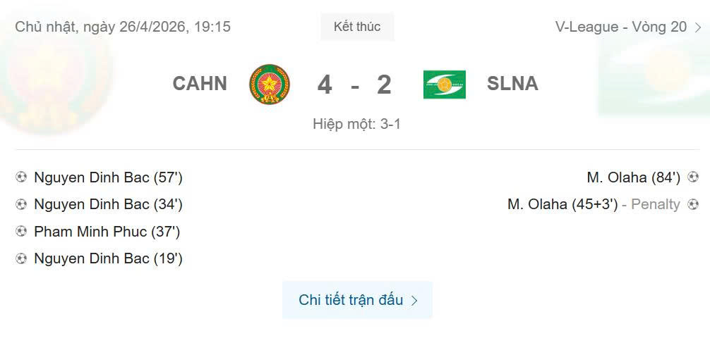

Đình Bắc lập cột mốc lịch sử với hat-trick ở vòng 20 V-League 2025-2026
Tiền đạo Nguyễn Đình Bắc ghi ba bàn thắng khi Công an Hà Nội dễ dàng giành chiến thắng 4-2 trước SLNA, khẳng định vị thế đứng đầu BXH.

Tỉ số chung cuộc trận đấu vòng 20 V-League: Công an Hà Nội 4-2 SLNA
Vòng 20 V-League 2025-2026 chứng kiến một trận thắng to của Công an Hà Nội trước SLNA với kết quả 4-2. Tuy nhiên, điểm nhấn lớn nhất của trận đấu chính là hat-trick của tiền đạo Đình Bắc - một cột mốc đáng nhớ trong sự nghiệp của cầu thủ này.
Bàn thứ nhất của Đình Bắc tới sớm, ở phút 19. Sau một pha xây dựng tốt từ phía trước, cầu thủ sinh năm 2004 tìm thấy khoảng trống, sút chân trái mạnh mẽ, quả bóng đi thẳng vào góc nhà thầu của SLNA, khiến thủ môn không kịp phản ứng.
Tiền đạo Công an Hà Nội Nguyễn Đình Bắc (áo đỏ) ghi bàn thứ hai ở phút 34 trong trận thắng SLNA 4-2 ở vòng 20 V-League 2025-2026
Không dừng lại ở đó, Đình Bắc tiếp tục ghi bàn ở phút 34. Qua một pha kéo dài từ trung tuyến, anh tìm thấy không gian trong vòng cấm SLNA. Dù bị hậu vệ đối phương kèm chặt, Đình Bắc vẫn giữ được bóng, điều chỉnh hướng sút và ghi bàn thứ hai, nhân đôi cách biệt cho CAHN.
Bàn thứ ba và hoàn tất hat-trick của Đình Bắc đến ở phút 52. Ở phút này, anh bị hạ xuống trong vòng cấm SLNA. Sau khi xem lại video, trọng tài quyết định thổi phạt đền. Từ chấm 11m, Đình Bắc tiến lên, sút vào giữa khung thành và hoàn thành hat-trick đầu tiên trong sự nghiệp V-League. Sau bàn thắng, anh ăn mừng bằng động tác nhảy xoay quen thuộc của thần tượng Cristiano Ronaldo.
Đình Bắc ăn mừng bàn thứ hai ở phút 34 trong trận thắng SLNA
Sau trận đấu, Đình Bắc tỏ ra rất vui mừng. "Tôi cảm thấy hạnh phúc về cột mốc này. Nhờ sự tin tưởng từ các đồng đội, tôi mới có cơ hội để thực hiện hat-trick đầu tiên", cầu thủ quê Nghệ An chia sẻ.
Trước khi bùng nổ trong tháng 4, Đình Bắc phải vượt qua một giai đoạn khá khó khăn. Anh trải qua chuỗi gần 500 ngày không ghi bàn tại V-League trước khi quay lại phong độ. Kể từ khi ghi bàn mở tài khoản trong trận thắng Đà Nẵng 5-1 ở vòng 17, Đình Bắc đã nổ tung với 7 bàn sau bốn trận.
Với hat-trick hôm nay, Đình Bắc đã vươn lên vị trí thứ bảy trong danh sách ghi bàn V-League mùa này, bằng với Geovane Magno và Fred Friday của Ninh Bình. Đáng chú ý, anh trở thành cầu thủ nội ghi nhiều bàn nhất hiện tại, và chỉ còn cách người dẫn đầu Alan Sebastiao (đồng đội ở CAHN) 7 bàn.
Bên cạnh những bàn của Đình Bắc, Công an Hà Nội còn có bàn thứ tư ở phút 37 từ hậu vệ Phạm Minh Phúc. Tuy nhiên, hàng thủ chủ nhà cũng mắc sai lầm dẫn đến hai bàn thua. Michael Olaha ghi cú đúp, một bàn từ chấm 11m ở phút 45 và bàn thứ hai từ bóng đầu ở phút 84.
Chiến thắng 4-2 giúp Công an Hà Nội vức dậy vị trí đầu bảng với 51 điểm, nới rộng cách biệt lên tới 9 điểm so với đội xếp thứ hai Thể Công (trận này Thể Công bị Đà Nẵng cầm hòa 3-3). Trong khi đó, SLNA đứng thứ tám với 24 điểm khi giải còn 6 vòng đấu.
Ở vòng 21, Công an Hà Nội sẽ có một trận khó khi làm khách trên sân của Hải Phòng vào ngày 2/5. Một ngày sau, SLNA sẽ tiếp đón đội bóng Tây Ninh HAGL tại sân nhà.